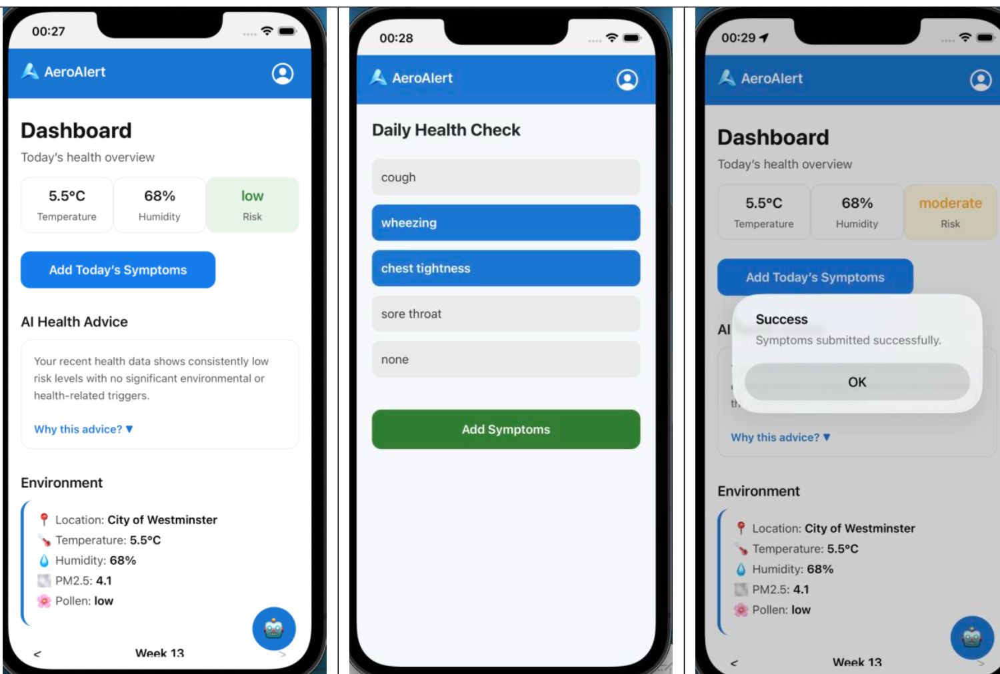
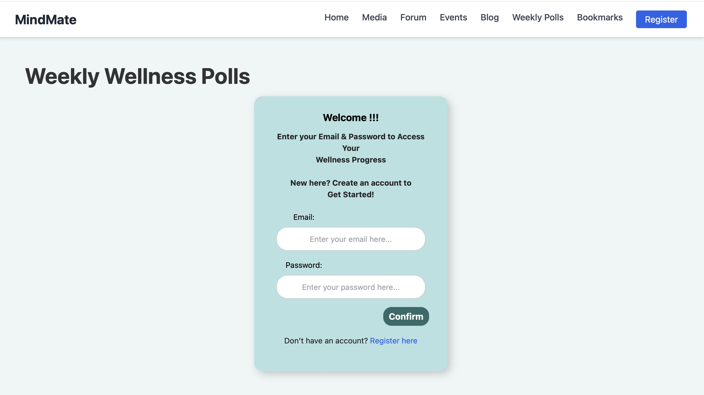
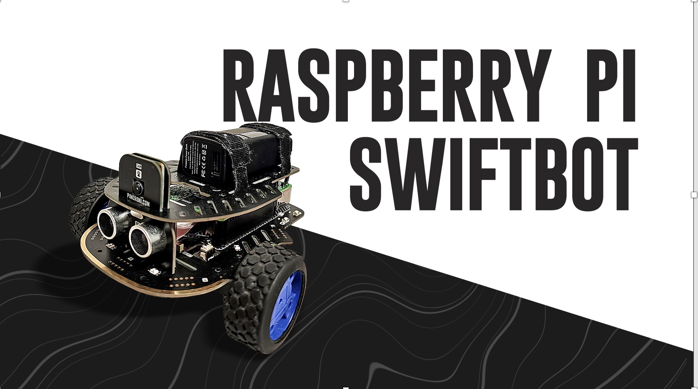

About
I’m a Computer Science (AI) student at Brunel University London, passionate about building intelligent, user-focused applications that connect data science with real-world impact. My technical expertise includes Java, React, Spring Boot, and MySQL, alongside experience in AI model development, data analysis, and full-stack web systems.
I’m currently developing my Final Year Project — AirSafe, a mobile-based AI-powered weather and health risk prediction app that integrates environmental APIs with machine-learning models to forecast potential health risks caused by air quality, pollen, and temperature changes.
Previously, as an Edge AI Engineering Intern at ArbaLabs (ArbaEdge Programme), I built backend prototypes for AI model verification and secure data handling pipelines. I’ve also explored robotics integration through the Raspberry Pi Swiftbot navigation system and led both frontend and backend development for a mental wellness platform (MindMate) using Agile Scrum methodology.
I thrive in collaborative, fast-paced environments where I can learn continuously and apply AI for social good. My long-term goal is to become a software engineer who develops human-centric intelligent solutions that improve quality of life.
Skills
Technical Skills
JavaC++PythonR (Data & ML) HTMLCSSJavaScriptReact Spring BootMySQLMSSQLGit / GitHub Agile / ScrumREST APIsData VisualizationSoft Skills
Problem SolvingCommunicationTeamwork AdaptabilityAttention to DetailTime Management LeadershipCritical ThinkingProject CoordinationSelf-MotivationProjects

AeroAlert – AI-Powered Health Risk Prediction AppDeveloped AeroAlert, an AI-powered mobile application that predicts respiratory health risks using real-time environmental data such as air quality, temperature, and humidity. Implemented a hybrid system combining rule-based logic and a machine learning model (Random Forest) for accurate risk classification. Integrated an AI assistant (AeroAssist) to provide personalised health insights and recommendations.

MindMate — Weekly Wellness PollsDeveloped and integrated the Weekly Wellness Polls feature with frontend and backend synchronization. Implemented UI components, API endpoints, and database interactions using Agile methodology.

Raspberry Pi Swiftbot — Java Navigation SystemDeveloped a Java-based navigation system for the Raspberry Pi Swiftbot, optimizing traversal and pathfinding across diverse environments. Collaborated with teammates to integrate navigation into the system architecture.
 Simon Game — Command-Line Interface
Simon Game — Command-Line Interface
Designed and implemented a command-line version of the Simon memory game using Java. Created algorithms, flowcharts, and pseudocode to structure gameplay logic, highlighting teamwork, problem-solving, and time management skills.
Education
Certifications
Contact
📞 Phone: +44 7432 452059
✉️ Email: sheikhany123@gmail.com
🌍 LinkedIn: linkedin.com/in/sheikh-a-46556829a
💻 GitHub: github.com/Sheikh745
📍 Location: London, UK